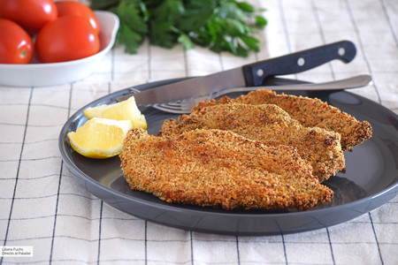

Filetes de pollo al horno crujientes

| Ingredientes: |
- 700g de pechuga de pollo en filetes
- 2 huevos
- 200ml de leche
- 10ml de mostaza de Dijon
- 1 cucharadita de pimentón(dulce o picante)
- 1/2 cucharadita de comino molido
- 1/2 cucharadita de ajo molido
- Pan rayado grueso o panko
- 1 cucharadita de orégano
- Pimienta y sal
|
Método de preparación:
- Racion/es: 4
- Tiempo de preparación: 40min
- Tiempo de reposo: de 1 a 2 horas.
- Si los filetes son gruesos lo martilleamos con un martillo de carnes para ablandarlos.
- Batimos los huevos y le añadimos leche, mostaza, pimentón, comino, ajo y pimienta y volvemos a batir hasta tener un mezcla homogénea.
- Tapamos con un film y lo dejamos reposar en el horno entre 1 y 2h
- Precalentamos el horno a 200ºC y mientras procedemos a rebozar los filetes.
- Ponemos los filetes en una bandeja amplia y lo metemos a hornear 20 minutos. Una vez terminados le damos la vuelta y lo dejamos otros 15 minutos.